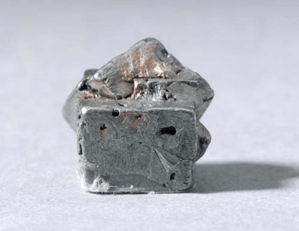

Platinum - Pt
Native Elements


Habit: Whitish steel-gray to dark gray. Rare metal in nature; typically in flakes or grains, very rare in nuggets. Even rarer are its cubic crystals. Opaque; Metallic Luster.
Environment: Found in or associated with mafic and ultramafic igneous rocks, also found in quartz veins associated with hematite, chlorite and pyrolusite
Etymology: From the Spanish platina, diminutive of plata, silver. It was believed at this time that it was impure ore of silver.